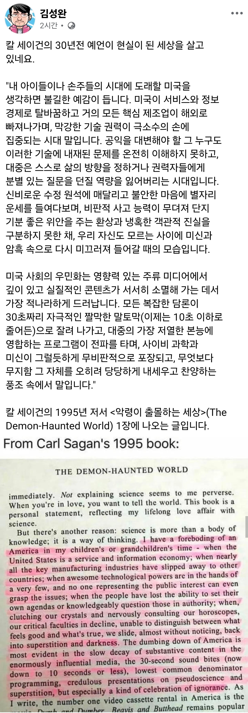

칼세이건이 스스로의 젊은시절에 비추어봤을때 95년대에도 그것이 진행되고있음을 통찰한거지. 기술 발전하면서 가속화 되고있고. 파인만도 결은 다르지만 비슷한 언급함 생전에
60년대에 예상한 미래기술 같은거 굉장하던데
저런 통찰력 있으면 세상 답답해 보일듯
95년도 즈음에 저런걸 걱정한 사람을이 더러 있었음..
냉전이 끝나고 다음 시대의 틀이 슬슬 잡혀가던 시점이었으니까.
그때 이미 미국은 제조업은 외국으로 빠져나가고 월가의 양복쟁이들이 득세하기 시작 했으니까..
MIT, 하버드, 스탠포드 졸업한 애들이 어떻게든 해주겠지머
대한민국에는 해병대가 있습니다.
카이스트 아니었어?
박현준 해줘
" 맞아 우리에게는 현준이가 있어 ~~!! "
아 선생님 그건 게임인데... 마치 드래곤볼에 손오공 같은거에요.
박현준!! 아무튼 문제를 해결해!!
예전에 구두언어에서 문자언어로 전환될 때도 비판하는 목소리 많았다는데
지금도 그냥 꼰대들이 걱정하는건지
아니면 진짜 위기인지
보통 인간사에서 위기일때가 항상 변화와 발전이 제일 많던시기라
해결하면 더 좋은 세상으로 가겠지만 못하면 인간 종의 멸종으로 갈 수도 있겠지
그래도 지금까지는 대부분 해결해온거긴 하지만
새로운 기술이 생겼다고, 새로 생긴 걸 어떻게 써야할지에 대해서 같이 나오는건 아니지.
악용가능성을 파악하고 법령, 규제등으로 이를 어떻게 견제할지에 대한 고민이 없으면 바로 디스토피아 가는겨..
대표적으로 추천 알고리즘의 강력함을 제대로 이해하지 못하고 SNS에 도입되니, 그걸로만 발생한 사회적 부작용이 엄청나잖아. 에코챔버 효과부터, 성장기 청소년들의 우울증, 자살등등..
새로운 기술 자체가 나쁜게 아니라, 이걸 어떻게 사용할지에 대한 고민과 사회적 협의가 같이 필요한거지.
통찰력이 대단한 사람이구마
칼셰이건이 95년도에 저서에서 남긴 말이라는데, 역시 한시대를 풍미한 초일류급 과학자였던 이유가 있네. 통찰력이 무슨...
해병대급
민주주의의 위기는 중산층 붕괴로 인한 양극화에서 온다고 하더라.
정권을 바꿔가며 리더를 대체해도 양쪽 다 이상한 후보들만 당선되고
왼쪽/진보 정권은 더 이상 노동자들을 위하는 정책을 펴지 않고
반대쪽은 반대쪽대로 힘있는 리더를 뽑아서 힘을 실어줘야 한다는 사상이 팽배해짐
개인화된 미디어에서는 자기 입맛에 맞는 정보만 들어오기 때문에 사상이 다른 양측은 대화가 불가능해질 지경
인공지능과 it 분야의 엘리트들은 테크노크라시를 밀어붙이기에 좋은 시기가 오고 있을지도
그런 닉으로 똑똑한 소리하지마라
우리 살아생전은 아니더라도 언젠가 미국도 무너지고 패러다임이 바뀌겠지
막강했던 로마처럼
미국은 항상 몇몇 천재가 이끄는 나라라고하니까
몇몇 천재는 지금의 미국정도는 대충 예상했겠지
근데 트럼프는 예상 못했을껄?
20년전 NSA에서 국민전체를 감청하던 프리즘 프로젝트가 이젠 필요가없어졌지 TV, 냉장고, 같은 가전에서 조차 광고목적으로 소비자들 감청하고있는데 국가기관에서 딸깍 한번하면 이젠 끝남 ㅋㅋㅋㅋ
결코 다시 전쟁, 결코 다시 전쟁
그냥 우리땅에서만 안나길
천문학자 였지만 참 다재다능하고 통찰력 있던 사람이었음. 어릴때 코스모스 다큐 재밌게 봤었는데
칼 세이건의 악령이 출몰하는 세상 읽어볼만함
변화에 걱정이 있는건 이해하지만 세상의 변화에 따라 삶의 양식이 달라지고 생각하는게 달라지니 과민반응 할 필요는 없음.
옛날에는 암기력이 좋은 사람이 인재 취급 받아서 뭔 고시 전에 책 먹고 태운 물 마시는 그런 짓을 하면서 달달 외우기를 했지만
지금 이 순간에는 암기력의 중요성이 낮아지고 오히려 다양한 정보를 빠르게 찾아내고 접근하는 능력과 현상과 상황을 더 멀리 넓게 바라보는 관점을 가진 사람의 가치가 올라간다고 믿음.
이런 변화는 3차 산업혁명 이후로 크게 변하고 있는 부분임.
문제는 과거에서 이어온 권력과 그 세습, 그리고 교육의 형태는 과연 얼마나 변했을지 생각해 볼 필요가 있음
나도 이 책 봤을때 딱 저 부분 보고 표시한 기억이 남 ㅋㅋㅋ 여윽시 칼 세이건 센세
천재는 괜히천재가 아니다 ㄹㅇ
저때 저렇게 말했다는건 이미 저때도 그랬다는거제
ㄷㄷㄷ
요즘은 이민자 주입으로 민주주의 파이먹기 공략당하고 있고
자유진영 부동산은 싹다 사서 최전방 기지로 사용하고 있음
군부대 근처 농지나 임야도 누군가에겐 아주 맛좋은 부동산임
예? 95년에요?